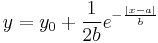
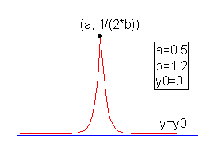

Contents |

Fit with Laplace distribution function.

Number: 3
Names: y0, a, b
Meanings: y0 = offset, a = location, b = shape
Lower Bounds: none
Upper Bounds: none
Full Width at Half Maximum: FWHM = 2 * b * ln(2)
nlf_Laplace(x, y0,a,b)
FITFUNC\LAPLACE.FDF
Statistics, Peak Functions